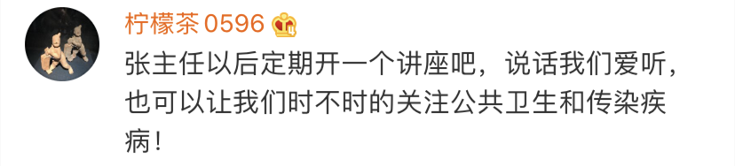

治愈率近50%，上海是怎么做到的
原文链接 备份链接 澎湃新闻记者 陈斯斯 陈伊萍 栾晓娜 从1月20日上海确诊首例新冠肺炎患者以来，上海抗疫战即将满月。 而近一个月来，截至2月17日上午，确诊的331例患者中已有161人出院（包括4名儿童）。治愈出院率近50%，上海是如 …
澎湃新闻 综合报道
今天上午，上海市公共卫生临床中心再度传来好消息：22名患者痊愈出院，包括3名重症患者。截至目前，治愈出院率已超74%。
备受期待的“上海方案”几时出炉？在上海医疗救治专家组组长、华山医院感染科主任张文宏看来，上海的方案并不是停留在纸上的，而是写在病人身上，治疗方案只有写在病人身上，才认为这个治疗方案是正确的。“所以，这些病人出院了，我认为上海的方案就出台了。”
目前，上海的患者中年龄大的较多，更容易引起病情进展，这也给医疗团队带来更大挑战。那么对于重症患者、危重症患者的治疗方案，上海又有什么特点？
张文宏在接受记者采访时表示，“我跟你讲你一定听不懂，因为我们读的书不一样，我讲的每一个汉字你都能听明白，但不会知道是什么意思。但有一句话你一定能听懂。”
随后他用这一句话总结了上海重症患者治疗方案的特点：即在上海市政府、卫健委的统一协调下，把上海市所有的优势资源、多学科团队全部集中在这里，一起救治。
而就在昨晚，张文宏还在上海一活动中，担任了主讲嘉宾，与网友分享自己的书单，探讨疫情防控期间如何正常生活。在将近一小时的直播时间里，张文宏又爆出了哪些金句？小编为你整理了下：
华山医院感染科主任张文宏教授。澎湃新闻记者 邓朝键 图
“
防火防盗防同事
上海熬过了14天的节点，大部分人经受了考验，确诊人数断崖式下跌。
他表示，大家可以慢慢地在可控的范围内出来走走，但必须戴着口罩。“还得保持着警惕的心态，不要到处瞎玩，不要摘下口罩聊天，避免一起吃饭，取消不必要的活动。正常生活正在慢慢回归，但是还没有到为所欲为的地步。
张文宏建议大家，做好自我防护，戴好口罩，勤洗手。
同时他还强调了之前刷屏的“金句”：“防火防盗防同事”。此前报道《“段子手男神”张文宏，又有金句了！》
“
通过看无聊电视剧缓解疲劳
疫情当前，很多一线医务工作者，一天工作时间要超过15、16个小时。在谈到如何休息时，张文宏透露，外科医生回家深更半夜，回家的感觉就是“葛优躺”。
他说，“像钟南山教授一身肌肉一样很少见。运动当然非常好，我也爱运动，但是太劳累了，我买过健身卡，基本一年去两三次，还有一次就是健身房关了。运动对我就是周末散步，跑跑，安静休息为主。”
在极度疲劳的时候，张文宏也爱看比较“无聊”的连续剧，不会太费脑，让自己放松。
“
我理解什么叫被人欺负
张文宏医生平时比较爱阅读，“在焦虑的状态下，看书是非常好的调剂之一。张文宏还建议，在这个特殊时期，可以读一读科普方面的书。
“现在社会上有人会觉得自己老是被欺负，其实我一路也是被人欺负过来的，如今年过半百了，现在更理解很多人的这种滋味。书读多了，你能明白欺负人的嘴脸是什么样的，对于欺负你的人你就绕着走，除非你力量强大了。被人欺负了，自己更要学会怎么多善待别人，将心比心，换位思考，站在不同的角度看问题。”

自新型冠状病毒疫情发生以来，因坦率有担当的多次发言，张文宏成为备受网友信任的网红“硬核专家”：
“把所有人都换下来，共产党员上！”“你在家里不是隔离，也是在战斗！你觉得很闷，闷两个礼拜，病毒也要被你‘闷死’了”“防火防盗防同事”等刷屏级金句火遍网络，也让不少处于紧张慌乱情绪中的民众倍感安心。




（综合自澎湃新闻见习记者 陈少颖 记者 栾晓娜 忻勤 邓朝键、新闻晨报、网友评论等 ）
戳这里进入
“全国新型冠状病毒感染病例实时地图”↓↓↓
本期编辑 周玉华
推荐阅读


原文链接 备份链接 澎湃新闻记者 陈斯斯 陈伊萍 栾晓娜 从1月20日上海确诊首例新冠肺炎患者以来，上海抗疫战即将满月。 而近一个月来，截至2月17日上午，确诊的331例患者中已有161人出院（包括4名儿童）。治愈出院率近50%，上海是如 …
原文链接 备份链接 澎湃新闻记者 赵思维 发自武汉 2月6日下午，江汉方舱医院内，一名协和医院的女护士轻声播音一段初来的问候。来源：@武汉发布(01:17) “初来陌生的环境，您可能不太适应，甚至感到紧张或焦虑，我们能够理解。希望大家能跟 …
原文链接 备份链接 澎湃新闻记者 汤琪 发自武汉 实习生 胡友美 孟津津 薛晓咚 武昌医院西院区门诊部。澎湃新闻记者 汤琪 图 从武汉市武昌区和平大道通往武昌医院西院区门诊楼的小径，是一条“断头路”，若开车进去，只能调头原路返回。这座医 …
原文链接 备份链接 澎湃新闻记者 何颖晗 栾晓娜 陈斯斯 2月22日，上海16例新冠肺炎患者痊愈出院。如何救治重症患者，专家沈银忠接受澎湃新闻采访。澎湃新闻见习记者 邹桥 编辑 顾一帆(00:37) 2月22日上午9时30分，在上海市公共 …
原文链接 备份链接 “很多人去世。”袁鸣说，“但他们和我们都尽了最大的努力。” 2月15日上午，刚刚经历了一夜冬日雷雨和大风的武汉大雪纷飞，袁鸣早早进入病房查房。依次穿上蓝色隔离服、白色防护服，戴上手术帽、面屏和护目镜，套上手套和脚 …